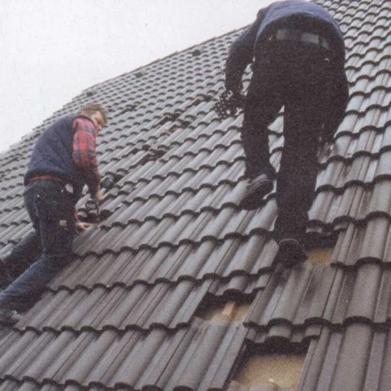
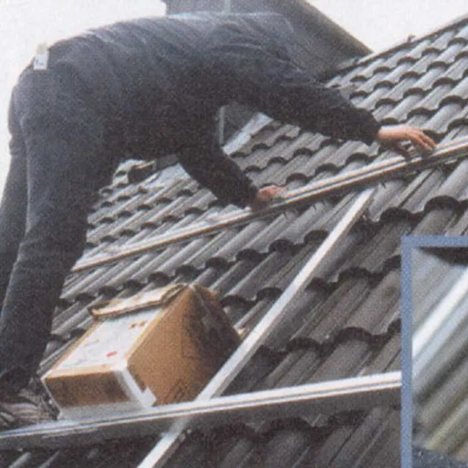
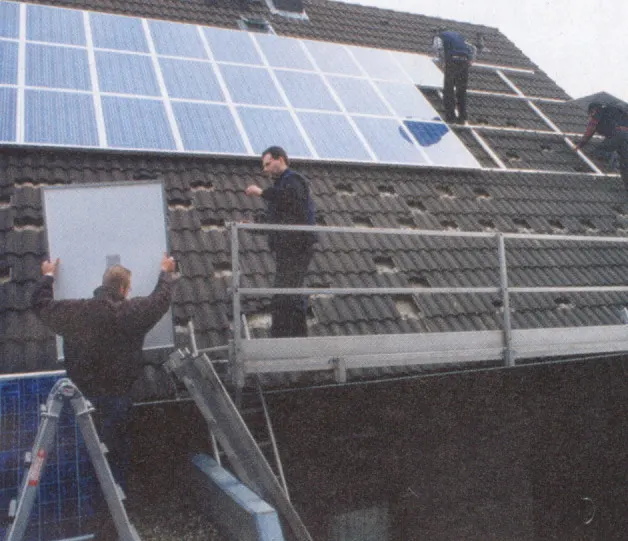
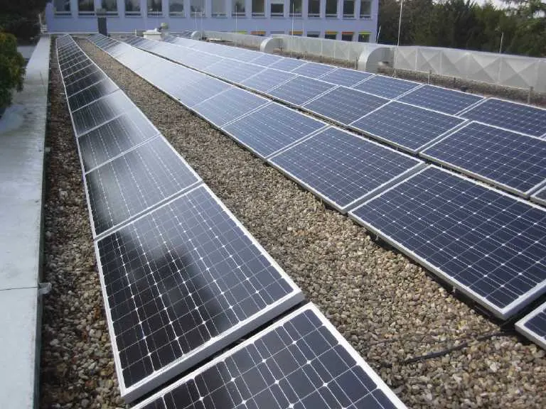
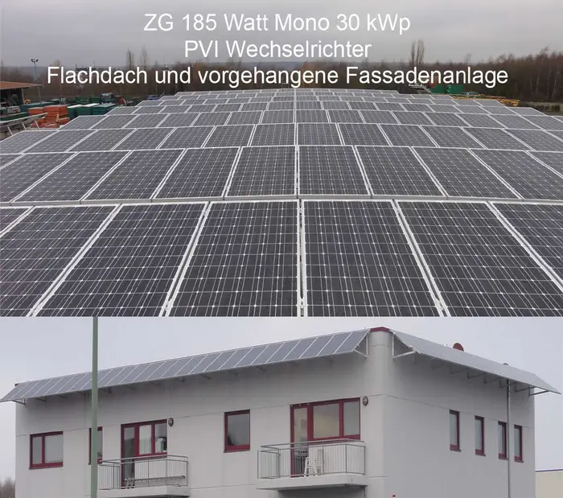
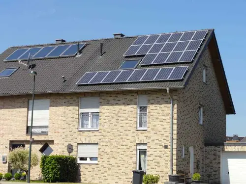
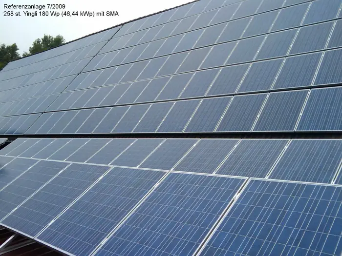
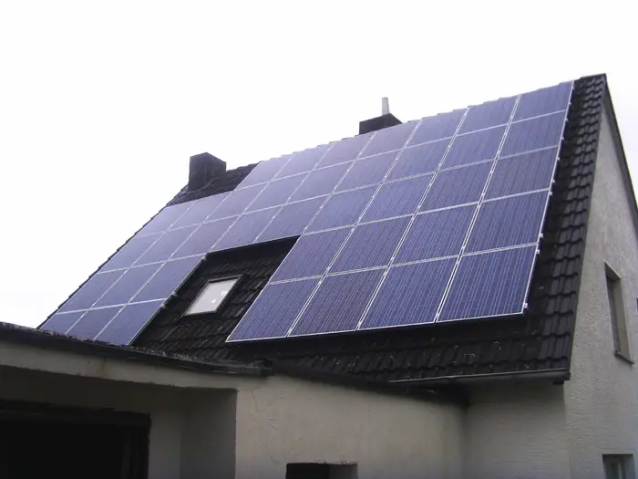
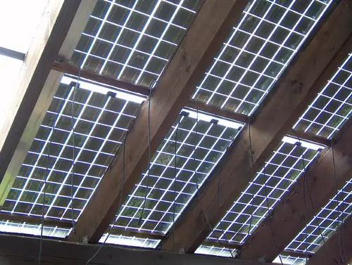

Photovoltaik · Stolberg & Aachen
Solarstrom vom eigenen Dach.
Wir planen und errichten PV-Anlagen, Speicher und Wallboxen – seit 1988, als Familienbetrieb, mit Elektromeister. Alles aus einer Hand, im Umkreis von rund 50 km um Aachen und Stolberg.
Montage aus Meisterhand
Jedes Dach wird einzeln geplant.
Kein Schema F: Ausrichtung, Neigung, Verschattung und Statik werden vor Ort begutachtet. Viele unserer Monteure und Elektriker sind seit ihrer Ausbildung im Betrieb.
Stromspeicher
Sonne auch nach Sonnenuntergang.
Mit einem Speicher nutzen Sie Ihren Solarstrom abends und nachts – und mit Notstromfunktion bleibt das Haus auch bei Netzausfall versorgt. SMA-Systeme, Tesla-Speicher und mehr.
Wallbox 11 kW
Tanken in der eigenen Garage.
Wir installieren leistungsstarke Wallboxen – in der Garage, am Carport oder in der Tiefgarage – inklusive der verpflichtenden Anmeldung beim Netzbetreiber.
Familienbetrieb seit 1988
Auch nach 38 Jahren noch am selben Standort.
Der Chef steht selbst auf dem Dach und berät am Küchentisch. Wir verkaufen kein anonymes Produkt, sondern eine Lösung, für die wir mit unserem Namen bürgen.


Seit 1988 im Einsatz für die Energiewende: In 38 Jahren hat SOTECH rund 1.500 Anlagen mit 7.800 kWp errichtet – und unzählige PV-Systeme in alle Welt versandt.
Leistungen
Alles aus einer Hand – vom Dachhaken bis zur Anmeldung.
Photovoltaik
Planung und Montage von PV-Anlagen auf Sattel-, Pult- und Flachdächern. Module von Heckert Solar (Chemnitz), Wechselrichter von SMA, Montagesystem TRIC von Wagner Solar.
Mehr zur Photovoltaik
Stromspeicher
SMA-DC-Speichersysteme und Tesla-Speicher mit Notstrom- und Ersatzstromfunktion. Wir dimensionieren den Speicher passend zu Ihrem Verbrauch.
Mehr zu Speichern
Wallbox
Zappy Wallbox 11 kW – sicheres, schnelles Laden zu Hause. Prüfung vor Ort, Montage und Anmeldung beim Netzbetreiber inklusive.
Mehr zur Wallbox
Anmeldung & Service
Anmeldung beim Netzbetreiber und im Marktstammdatenregister, Anmeldung von Wärmepumpen, Wartung, Monitoring und Solarversicherung – die Bürokratie übernehmen wir.
Mehr zum Service
Elektroarbeiten
Hausinstallationen in Alt- und Neubau, Zählerschränke, Sat-Anlagen und Türsprechanlagen – der Elektromeisterbetrieb hinter der Solartechnik.
Mehr zu Elektroarbeiten05–09 Uhr · Morgen
Die Anlage wacht auf.
Mit dem ersten Licht beginnen die Module zu arbeiten. Der Speicher hat die Nacht überbrückt – jetzt übernimmt wieder das Dach: Kühlschrank, Kaffee, Warmwasser laufen mit Solarstrom.
09–16 Uhr · Mittag
Das Dach lädt Speicher und Auto.
Zur Mittagszeit produziert die Anlage mehr, als das Haus braucht. Der Überschuss fließt in den Speicher und über die Wallbox ins E-Auto. Erst wenn beides voll ist, geht Strom ins Netz.
16–21 Uhr · Abend
Der Speicher übernimmt.
Wenn die Sonne sinkt und der Verbrauch steigt – Kochen, Licht, Fernseher – versorgt der Speicher das Haus. Teuren Netzstrom brauchen Sie kaum noch.
21–05 Uhr · Nacht
Unabhängig – auch bei Stromausfall.
Mit Ersatzstromfunktion trennt sich das System bei Netzausfall automatisch vom Netz und versorgt die wichtigsten Verbraucher weiter. Am nächsten Morgen lädt die Sonne den Speicher wieder auf.
So läuft die Montage
Vom ersten Dachhaken bis zur Inbetriebnahme.
Eine Reportage von einer unserer Baustellen – ein steiles Pfannendach, 48 Module, ein Tag.




01 / 06
Klettertour für Schwindelfreie
Das Dach ist zu steil, um auf den Pfannen zu laufen. Daher entfernen die Monteure zunächst ein paar Ziegel. Einige Lücken dienen dazu, die Dachhaken zu befestigen: Sie werden mit Holzschrauben an den Sparren montiert und danach wieder mit Dachpfannen bedeckt.
Die Schienen
Auf die Dachhaken kommen die Profilschienen in vertikaler Richtung. Die horizontalen Profile des Montagesystems werden mit Edelstahlschrauben auf den senkrechten Schienen befestigt. Das System ist recht belastbar – und die Installation geht schnell.
Module aufs Dach
Nun geht es an die Verkabelung. Alle Kabelbrücken werden mit UV-beständigen Kabelbindern an den Schienen fixiert. Dann kommen die Module in Einzelbefestigung aufs Dach: Innerhalb von zwei Stunden sind 48 Module verkabelt und befestigt.
Strangspannung prüfen
Bevor etwas angeschlossen wird, messen wir jeden Strang. Erst wenn die Werte stimmen, werden die Strangleitungen nach unten geführt – sauber verlegt, damit auch in 20 Jahren nichts scheuert.
Wechselrichter im Keller
Die Strangleitungen werden an den Wechselrichter im Keller angeschlossen – hier unten arbeiten Wechselrichter am besten, kühl und geschützt. Noch ein Erdungskabel, dann steht das System.
Zähler und Inbetriebnahme
Der Netzbetreiber setzt den Zweirichtungszähler im separaten Zählerplatz. Wir nehmen die Anlage in Betrieb, weisen Sie ein und übernehmen die Anmeldung im Marktstammdatenregister. Ab jetzt arbeitet die Sonne für Sie.

AachenEschweiler
DürenJülich
HerzogenrathHürtgenwald
WürselenAlsdorf
RoetgenUnser Einsatzgebiet: rund 50 km um Aachen und Stolberg – Städteregion Aachen, Kreis Düren und Kreis Heinsberg.
Schnell-Check
Was bringt Ihr Dach?
Dachfläche und Stromverbrauch eingeben – das Ergebnis rechnet live mit. Richtwerte für die Region Aachen, keine Angebotsgrundlage.
Richtwerte: 5 m² je kWp, 950 kWh je kWp und Jahr, Netzstrom 0,35 €/kWh, Einspeisevergütung 7,78 ct/kWh (Stand Feb.–Juli 2026), Eigenverbrauch ca. 30 % ohne / 60 % mit Speicher, 0,38 kg CO₂ je kWh. Genaue Zahlen gibt es beim Vor-Ort-Termin.
2027Stichtag EEG 2027
Jetzt handeln
Schnelles Handeln ist gefordert: Errichten Sie Ihre PV-Anlage vor dem 1.1.2027.
Die feste Einspeisevergütung wird für Neuanlagen zum 1. Januar 2027 abgeschafft. Anlagen, die danach ans Netz gehen, erhalten nur noch eine abgesenkte Übergangszahlung und müssen später in die Direktvermarktung – mit Smart Meter, Steuerbox und Dienstleister.
Wer bis Ende 2026 in Betrieb geht, sichert sich die Vergütung nach EEG 2023 für 20 Jahre. Die Mehrwertsteuerbefreiung für neue PV-Anlagen bleibt zunächst bestehen.
Termin wählen
Sprechen wir über Ihr Dach.
Kostenlose Beratung durch Elektromeister Dirk Gier – bei Ihnen vor Ort oder an unserer Besichtigungsanlage in Aachen.
Vor-Ort-Beratung
Herr Gier kommt zu Ihnen, schaut sich Dach und Zählerschrank an und berät kostenlos.
Termin anfragenBesichtigungsanlage
Speicher, Wallboxen und Wärmepumpe im Betrieb sehen – Mehrfamilienhaus in Aachen, nach Absprache.
Besichtigung vereinbarenRückruf
Sie nennen uns Zeit und Nummer – wir rufen zurück. Auch außerhalb der Bürozeiten erreichbar.
Rückruf wünschenAngebot anfordern
Eckdaten zu Dach und Verbrauch senden – Sie bekommen ein unverbindliches, kostenloses Angebot.
Angebot anfragenOder direkt anrufen
02402 7097620Mo–Do 8–15 Uhr · Fr 8–14 Uhr
Außerhalb der Geschäftszeiten: 0241 562489 oder 0171 5296741